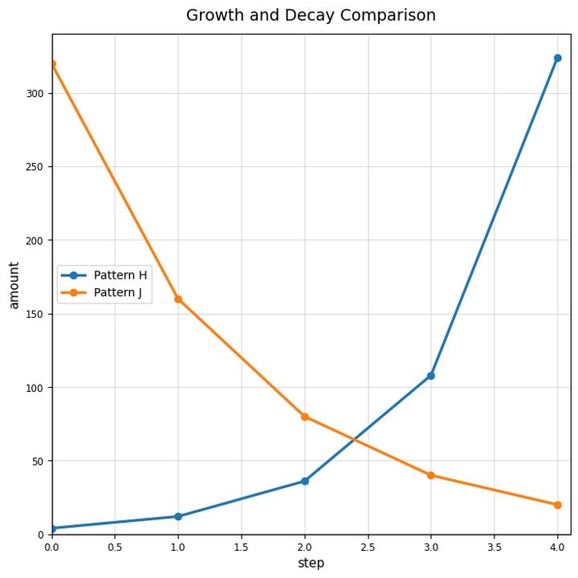

Convert each percent change into a multiplier.
For $y=18(1.4)^x$, identify the initial value and multiplier.
A phone starts at $600$ units sold and sales increase by $25$ percent each week. Write an exponential equation for sales after $w$ weeks.
A student writes $y=80(0.6)^x$ for the table below. Determine whether the equation matches and justify.
| x | 0 | 1 | 2 | 3 |
|---|---|---|---|---|
| y | 80 | 48 | 28.8 | 17.28 |
Classify: $3, 9, 27, 81, \ldots$
Classify: $25, 22, 19, 16, \ldots$
Does a multiplier of $1.18$ represent growth or decay?
Does a multiplier of $0.72$ represent growth or decay?
Use Pattern H and Pattern J. Which one is growth and which one is decay? Support your answer using the graph.

Find the ratios between consecutive terms. Is the pattern exponential?
| Step | 0 | 1 | 2 | 3 |
|---|---|---|---|---|
| Amount | 12 | 30 | 75 | 187.5 |
A student says every pattern with a constant difference is exponential because it keeps changing. Explain the error.
Design a short card-sort with one linear pattern, one exponential growth pattern, one exponential decay pattern, and one neither pattern. Include the evidence students should use.
What graph feature gives the maximum or minimum of a quadratic model?
Give one reason a quadratic context may have a restricted domain.
A model has vertex $(4,96)$ in a revenue context. Interpret the vertex.
A model gives a maximum output of $150$, but the context only allows whole-number inputs. Explain what should be checked before making a decision.